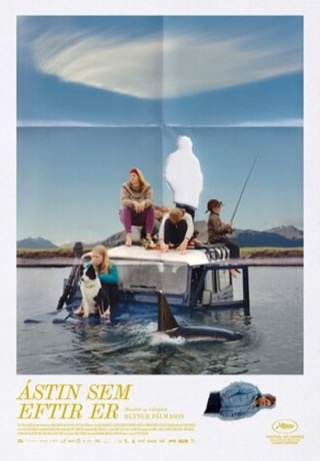

The Love that Remains
From the festival
A disintegrating marriage takes center stage in this quirky, heartbreaking, and tenderly human tragicomedy. Icelandic director Hlynur Pálmason ( Godland ) creates an atmosphere that echoes an eavesdropping documentary, capturing each member of the family—dissatisfied artist mom Anna, emotionally isolated dad Magnus, world-weary teen daughter, rambunctious pair of young brothers, and marvelously charismatic dog—as they navigate a year of change in and around their remote home. The Icelandic landscape is stunning, the ocean unrelenting, and emotions kept carefully in check as the parents grapple with unequal post-separation desires and the kids seek outlets for their energy and frustration. Monty Python─esque humor, artful interspersed sequences, wild fantasy visions, and a dreamy piano score wrap around the narrative, keeping everything a bit off balance—just the way it might feel for anyone grappling with love, loss, an occasional vicious rooster, and one’s place in the unique world of their own family. —Deanna Quinones
- Directed by
- Hlynur Pálmason
- Country
- Iceland / Denmark / Sweden / France
- Year
- 2025
- Running time
- 109 minutes
- Language
- Icelandic, English, Swedish, French
- Premiere
- West Coast Premiere
Source: Festival website programme (MVFF48): Wayback Machine copy; Festival film page: Wayback Machine copy; Poster from Wikipedia